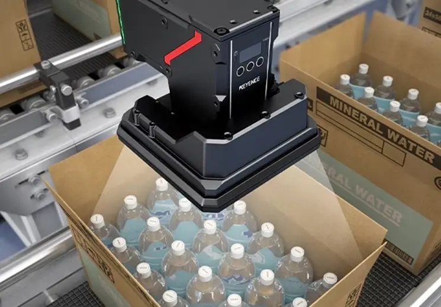

Inspección 3D
Escaneo óptico y láser para la reconstrucción tridimensional de piezas en tiempo real. Permite realizar análisis dimensionales exhaustivos y comparaciones contra el modelo CAD para asegurar una manufactura libre de desviaciones.
